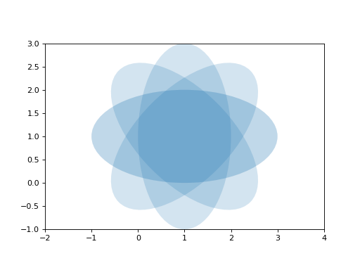

Probability¶
Probability Cheatsheet
Notation symbol |
Meaning |
|---|---|
\(\Omega\) |
Sample space |
\(\omega\) |
Atom |
\(p(\omega)\) |
Probability measure |
\(X\) |
Random variable |
\(x\) |
Realization of random variable |
\(p(X, Y, Z)\) |
Joint distribution |
\(p(X|Y)=\frac{p(X,Y)}{p(Y)}\) |
Conditional Probability |
\(p(X)=\sum_{y}p(X,Y=y)\) |
Marginalization |
\(p(Y|X) \propto p(X|Y)p(Y)\) |
Bayes rule |
\(X \perp Y \iff p(X,Y)=p(X)p(Y)\) |
Independence |
\(X \perp Y|Z \iff p(X,Y,Z)= p(X|Z)p(Y|Z)\) |
Conditional independence |
\(\bb{E}\right[f(X)\left]=\sim_x f(x)p(x)\) |
Expectation |
\(\bb{E}\right[f(X)|Y=y\left]=\sim_x f(x)p(x|y)\) |
Conditional expectation |
from pylab import *
from matplotlib.patches import Ellipse
delta = 45.0 # degrees
angles = arange(0, 360+delta, delta)
ells = [Ellipse((1, 1), 4, 2, a) for a in angles]
a = subplot(111, aspect='equal')
for e in ells:
e.set_clip_box(a.bbox)
e.set_alpha(0.1)
a.add_artist(e)
xlim(-2, 4)
ylim(-1, 3)
show()
(Source code, png, hires.png, pdf)
{kind=link}
{kind=link}
